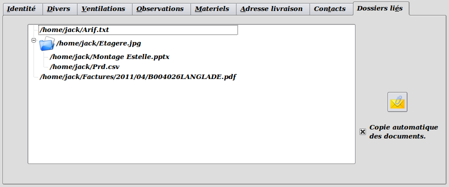

~ Comptabilité et Facturation Laurux ~

~ Comptabilité et Facturation Laurux ~ |
|
|
|

Dans les tables clients, fournisseurs et articles,
il est possible de lier certains documents à chacune des fiches. Cette
gestion des documents liés qui permet de mémoriser n'importe quel type
de document confère aux fiches selectionnées le statut d'un véritable
dossier dans lequel on pourra stocker les documents concernés par la
fiche.
Pour lier un document il faut cliquer sur le
bouton "Trombonne" à droite afin de
sélectionner les documents souhaités.
Si on souhaite lier un document à un autre document, il faut d'abord
sélectionner le document had hoc par un clic sur la ligne, puis
sélectionner le document en activant le bouton "Trombonne" à droite de l'onglet.
Pour ouvrir un document il suffit de double-cliquer dessus.
Pour supprimer un document, on le sélectionne et on appuie sur la touche "Suppr"
On n'est pas limité par les types de fichiers ni par le nombre de
documents. Le fonctionnement des documents liés est identique pour
toutes les fiches clients, fournisseurs ou articles.
Enfin, si on active la "Copie automatique
des documents" (disponible dans les fiches clients et fournisseurs) alors la mise à jour de la table des dossiers liés se fera
automatiquement à chaque impression des documents. Les documents PDF ainsi générés seront stockés à l'endroit défini dans les préférences,
Quels documents sont générés automatiquement ?
Pour les clients: Les proformas, les devis, les commandes,
les BL et les factures. Pour les fournisseurs: Les commandes, les bons
de réception manuels et et automatiques.
NB. Les documents sont triés automatiquement par ordre alphabétique.
----------------------------------------------------------------------------------------------------------------------